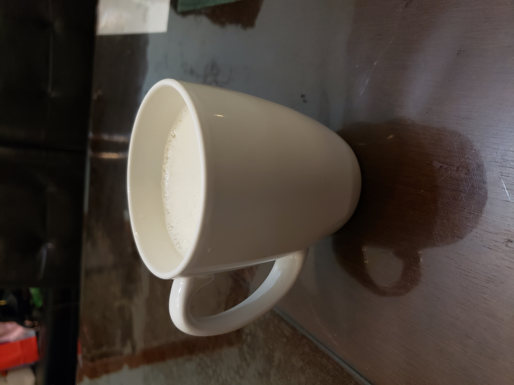

Anijsmelk

Ingredients:
- 1 cup Milk
- 1 tsp Anise seeds
- 1-2 tsp Sugar or Honey
Instructions
- Optionally, lightly crush the anise seeds with a mortar and pestle.
- Place the milk and the anise seeds into a small sauce pan. Heat over medium low until it reaches a gentle simmer.
- Mix in the sweetener and reduce the heat to very low. Let gently simmer for 10 minutes.
- Strain the seeds from the milk and serve.